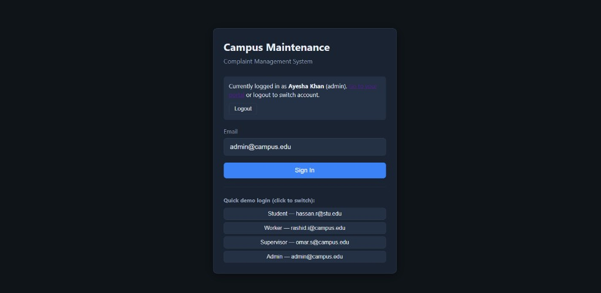
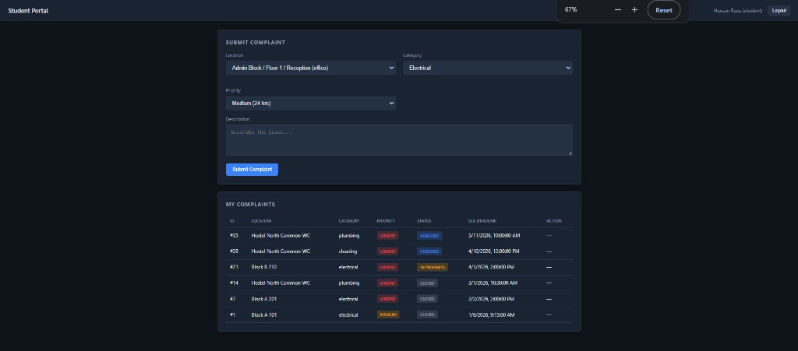
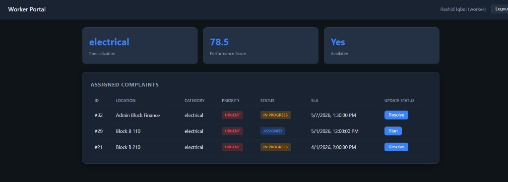
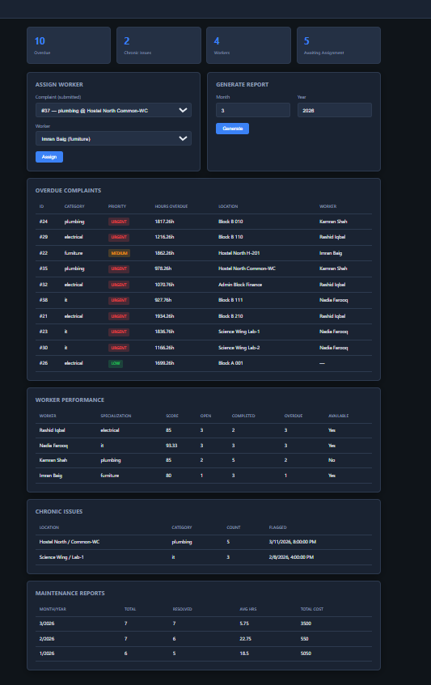

Campus Maintenance & Complaint Management System
A campus maintenance complaint management system built on Oracle Database (PL/SQL) with a basic Node.js + HTML/CSS/JS web interface. Students submit maintenance complaints by location and category; supervisors assign specialized workers; the database enforces SLA deadlines, logs status changes, detects chronic issues, and tracks worker performance.
oracledb| Table | Purpose |
|---|---|
| USERS | Students, workers, supervisors, admins |
| LOCATIONS | Building, floor, room registry |
| COMPLAINTS | Core complaint records with SLA and status |
| WORKERS | Worker profiles and performance scores |
| ASSIGNMENTS | Worker-to-complaint mapping and repair cost |
| STATUS_LOG | Audit trail for every status change |
| FEEDBACK | Student ratings after resolution |
| CHRONIC_FLAGS | Recurring issues at same location |
| MAINTENANCE_REPORTS | Monthly aggregated statistics |
7 Triggers 6 Procedures 4 Functions 5 Views Role Grants
| Page / Role | Function |
|---|---|
| Login | Role-based sign-in with demo accounts |
| Student Portal | Submit complaints, view status, submit feedback |
| Worker Portal | View assigned jobs, start and resolve tasks |
| Admin / Supervisor Dashboard | Overdue list, assign workers, worker stats, reports |
Both roles share the same dashboard UI in the current version. In the database,
supervisor can assign workers, monitor complaints, and run escalation.
Admin has broader access including full table control and all reports.
Demo logins: omar.s@campus.edu (supervisor), admin@campus.edu (admin).
Oracle XE PL/SQL SQL Developer Node.js Express oracledb HTML/CSS/JS
Screens below show the working prototype connected to Oracle. UI polish is a planned next phase.



